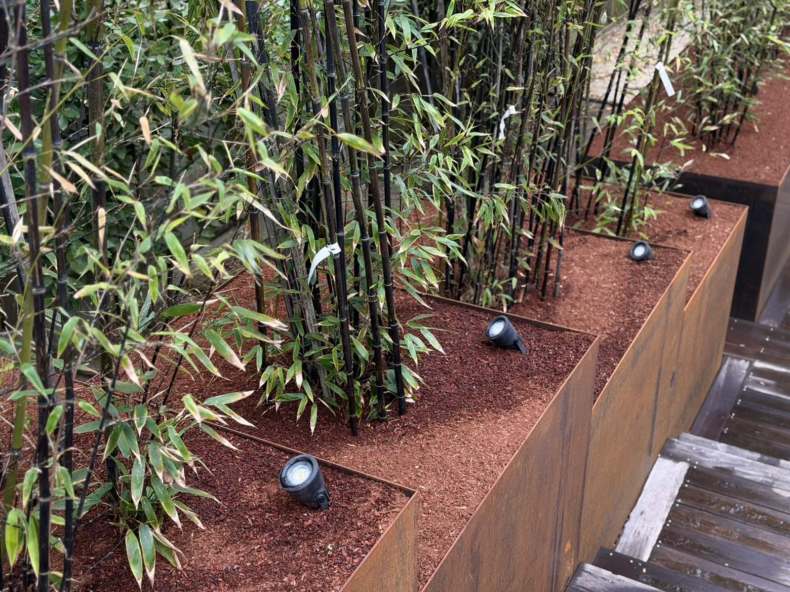

De l'étude de votre terrain à la livraison finale, Cédric Mandin conçoit et réalise votre jardin sur le Bassin d'Arcachon. Un projet pensé pour vos usages, votre sol et le climat du bassin.
Créer un jardin, ce n'est pas seulement planter quelques végétaux. C'est dessiner un espace de vie cohérent, adapté à votre terrain, à vos envies et à votre rythme de vie. Sur le Bassin d'Arcachon, Cédric Mandin prend en charge la totalité du projet, de la première esquisse jusqu'au dernier arrosage de reprise.
Tout commence par une visite de votre terrain et un échange sur vos usages : coin repas, espace enfants, potager, zone de détente, stationnement. Cédric tient compte de l'exposition, des vents dominants, de la nature du sol et de l'existant pour vous proposer un aménagement réaliste et durable, chiffré clairement dans le devis.
Sur le bassin, les sols sont souvent sableux, drainants et pauvres en matière organique. Avant toute plantation, le terrain est nettoyé, décompacté et amendé pour offrir aux végétaux un enracinement durable. Cette étape, invisible une fois le jardin terminé, conditionne pourtant la réussite de l'ensemble.

Arbres, arbustes, haies, massifs, vivaces : les essences sont choisies pour leur adaptation au climat océanique et aux sols landais, afin d'obtenir un jardin beau toute l'année et économe en eau. La pelouse est créée par semis ou placage de gazon selon votre projet, sur un sol préparé pour limiter les mauvaises herbes.
Un beau jardin se vit aussi. Cédric crée les terrasses, allées et bordures qui structurent l'espace et le rendent praticable, en bois ou en matériaux minéraux, en cohérence avec le style de votre maison. Ces aménagements peuvent être combinés avec la maçonnerie paysagère pour les murets, escaliers et soutènements.
Une fois le jardin livré, vous pouvez nous confier son entretien régulier pour qu'il garde toute son allure, saison après saison.
Un déroulé simple et transparent, pour savoir exactement où vous en êtes à chaque moment.
Cédric se déplace chez vous gratuitement pour comprendre votre terrain, vos besoins et vos envies.
Vous recevez un devis clair : travaux, végétaux, matériaux, planning et prix ferme.
Le chantier démarre à la date convenue et vous est livré clé en main, comme prévu au devis.
Chaque jardin est unique, le prix dépend de la surface, des végétaux, de l'état du terrain et des aménagements souhaités. C'est pourquoi Cédric se déplace gratuitement pour établir un devis détaillé et ferme, sans engagement de votre part.
Le climat océanique et les sols sableux du bassin demandent des essences adaptées : plantes résistantes au vent et au sel en bord de mer, végétaux acclimatés au massif landais à l'intérieur des terres. Avec 20 ans d'expérience locale, Cédric sélectionne des végétaux durables et économes en eau.
Oui. Que vous partiez d'un terrain nu après construction ou que vous souhaitiez repenser un jardin existant, la démarche est la même : on part de vos usages et de l'existant pour concevoir un aménagement cohérent et réalisable.
La préparation du sol et le choix d'essences adaptées sont pensés pour assurer une bonne reprise. Cédric vous conseille sur l'arrosage et les premiers gestes d'entretien, et peut prendre en charge le suivi de votre jardin dans le cadre d'un contrat d'entretien.
Devis gratuit, sans engagement. Cédric Mandin se déplace chez vous sur le Bassin d'Arcachon pour étudier votre projet de création.
lespaysagesdemandin@gmail.com